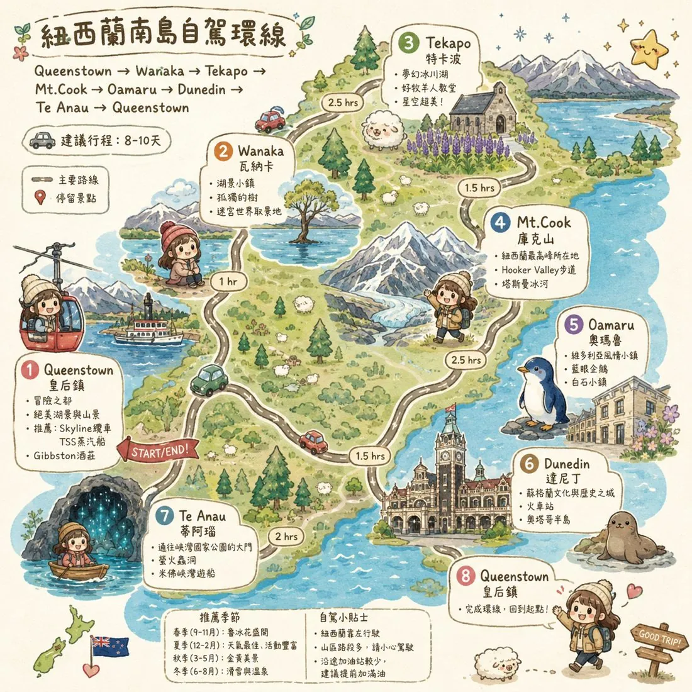

🌿
南島家庭旅行
請輸入家人共用密碼後進入。所有裝置會共用同一份景點、照片、購物與餐點資料。
進入行程
線上
☁️ 家人共享同步中
SOUTH ISLAND, NEW ZEALAND
謐境・南島
星穹冰河與曠野的雋永私藏
📅 2026.09.11 出發 – 09.28 抵台・南島15天14夜
15
南島天數
7
住宿地
--
精選推薦
🚗 行程
🗺️ 環線
🧳 指南
☀️ 天氣
🚗 紐西蘭南島自駕路線環線

⚠️ 找不到地圖圖片！
請點擊下方按鈕手動選擇：
📁 手動載入圖片
🗺️ 在 Google 地圖開啟完整環線
✈️ 飛航資訊
🛫 去程航班 (中華航空 CI53)
日期
2026.09.11 (五)
出發
23:55 桃園機場 (TPE)
轉機
布里斯本 (BNE)
約停留 1.5-2 小時
抵達
約 18:25 奧克蘭 (AKL) (+1日)
🛬 回程航班 (中華航空 CI54)
日期
2026.09.27 (日)
出發
20:35 奧克蘭 (AKL) 出發
轉機
布里斯本 (BNE)
約停留 1.5-2 小時
抵達
約 05:25 抵達 桃園 (TPE) (+1日)
※ 詳細時間請依最新電子機票為準。
📁 行程票券與住宿總匯
可上傳憑證截圖。點擊「出示截圖」即可全螢幕放大給櫃檯人員確認！
⛽ 南島自駕建議加油策略
南島油價城鎮差異大，建議利用大城市超市優惠券或平價站點。
⛽ 查看即時油價
📍
Day 1 / 2 (Wanaka)
：機場取車後，於 Wanaka 的 BP 或市區加滿，備戰明日長途與山路。
🗺️ 導航至 BP Wanaka
📍
Day 3 (Twizel)
：前往 Tekapo 前，推薦在 Twizel 的 NPD 加油站補給，通常麥肯齊盆地最便宜。
🗺️ 導航至 NPD Twizel
📍
Day 6 / 7 (Oamaru)
：離開庫克山後，於 Oamaru 市區的 Z Energy 或 NPD 補滿。
🗺️ 導航至 NPD Oamaru
📍
Day 8 / 9 (Dunedin)
：Dunedin 油價相對便宜，強烈建議在 Pak'nSave 採買後領取 Voucher 並於旁邊加油！
🗺️ 導航至 Pak'nSave Fuel
📍
Day 10 / 11 (Te Anau)
：進入峽灣前最後大鎮，務必在 Te Anau 的 NPD 加滿，峽灣內無加油站且極度昂貴。
🗺️ 導航至 NPD Te Anau
🎒 行李打包清單
南島 9 月為初春，早晚溫差大、山區多風，建議洋蔥式穿搭。點擊項目可勾選完成。
🛍️ 紐西蘭購物清單
記得預留行李空間＆秤重額度。您可以自行上傳商品截圖！
📋 旅遊規範與提醒
您可以自行新增行前準備規範或攜帶物品注意事項，並附上截圖（如海關申報單範例）。
🌌 即時氣象與觀星穿搭指南
串接 Open-Meteo 即時氣象，自動提供各城鎮目前的氣候數據與穿搭建議。
🔄 取得最新即時氣象與穿搭
即時資料尚未更新
🛰️ 即時衛星雲圖
資料來源：RainViewer 紅外線衛星影像，涵蓋紐西蘭南島，可拖曳縮放並手動重新整理取得最新畫面。
🔄 重新整理雲圖
衛星雲圖尚未更新
🔗 查看 MetService 官方雷達／衛星雲圖（紐西蘭氣象局，另開新分頁）
🚗
行程
🗺️
環線
🧳
指南
☀️
天氣
✕